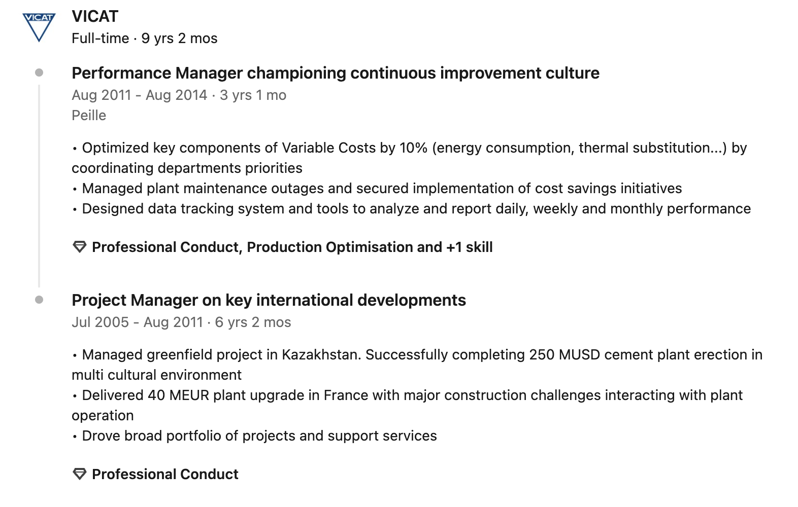

Olivier Terver
,
Summary : In a nutshell...
With over 20 years of experience driving organizational change, I am passionate about fostering curiosity,
empowerment, and entrepreneurship to challenge the status quo and deliver innovative solutions.
I thrive on coaching others to bring their best ideas forward, creating environments where employees feel
engaged, gain new perspectives, and find greater purpose in their work.
My approach combines data-driven
insights with people-focused strategies to achieve impactful and lasting outcomes.
Education : Master of Science in Engineering
- ECAM : Ecole Catholique des Arts et Metiers
Experience : A journey in the cement industry
- From Production to Plant Manager


- From Project Management to Production

- The Early Days: Learning the Ropes
Skills : Always a work in progress ..!
- Change Management
- Strategy
- Project Management
- Continuous Improvement
- Data Analytics
- Business Process Improvement
- Transformation
- Performance Improvement
- Optimization
- Technology Integration